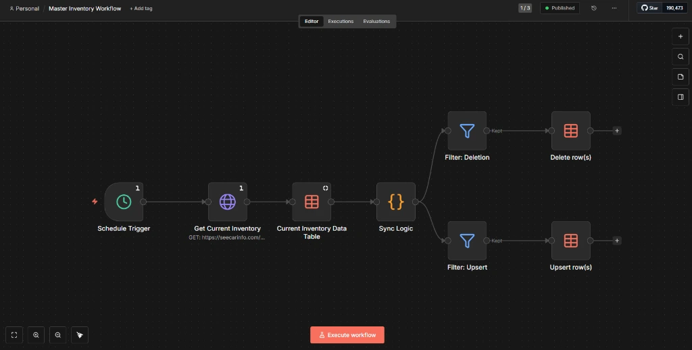
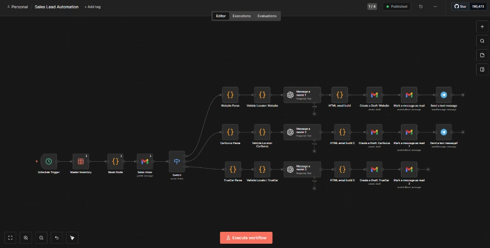

Technology & Automation Projects
VeteranLM (veteranlm.com) is an AI-powered system designed to help veterans navigate, identify, and apply for healthcare programs, benefits, and educational resources within the VA system.
Key architectural goals include:
- Intelligent document parser to extract credentials and cross-reference eligibility rules.
- Interactive query interfaces customized for VA policies, documentation guides, and claims forms.
- Data-sovereignty modules ensuring veterans retain strict ownership over their records.
Practical systems integrations mapping business workflows to automated sequences. These configurations eliminate data silos by linking inventory platforms, accounting systems, and marketing channels.
Highlights of automation designs:
- Automated notifications and status alerts mapping logistics chains to client-facing CRM updates.
- Digital pipeline creation to automate compliance reporting and contract file handling, reducing manual F&I tasks.
- Standardized database entries executing instant updates across marketing lists and vendor catalogs.

Development and scaling of AI applications for daily business functions. This focus area explores how small to mid-sized teams can implement machine learning models to reduce response latency and improve decision accuracy.
Implemented solutions focus on:
- Contextual lead qualification routing based on customer inquiries.
- Automated email responses using customized guidelines matching business voice and inventory parameters.
- Prompt orchestration blueprints designed for executive summaries, performance auditing, and compliance checks.

A structured systems engineering framework focused on deploying self-hosted enterprise resources, configuring reverse proxies, and managing containerized microservices. The focus is to design stable, secure network foundations to host business operations software.
Key architectural areas:
- Docker and Docker Compose to containerize applications and enforce environment isolation.
- Traefik and Nginx for secure, reverse-proxy routing, SSL termination, and high-availability traffic management.
- Python scripting for system orchestration, database backups, and scheduled cron automations.